Team WVS
Website Vulnerability Scanner
User Manual
Introduction
This manual describes the features available to users of the Website Vulnerability Scanner (WVS). It explains how to register a website, prove that you own it, scan it, review and triage what the scan finds, and share the results as a report. The last section covers the extra tools available to administrators of a WVS deployment.
WVS is a detection tool, not an attack tool. It scans only websites whose ownership has been proved, it never exploits what it finds, and it keeps its request rate low so the website is not harmed.
Contents
Accessing WVS
Creating an account
- Open the WVS web address in your browser and click Sign Up at the bottom of the sign-in card.
- Enter your Name, Email and a Password of at least 12 characters. The strength meter under the password shows how strong it is. Click Sign Up.
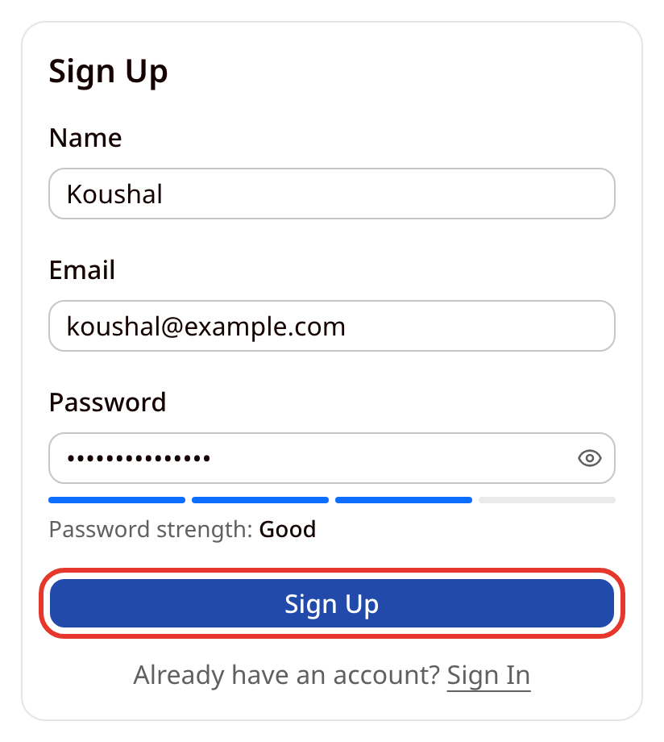
- WVS emails you a 6-digit confirmation code. The code expires after 10 minutes, and it stops working after three wrong attempts.
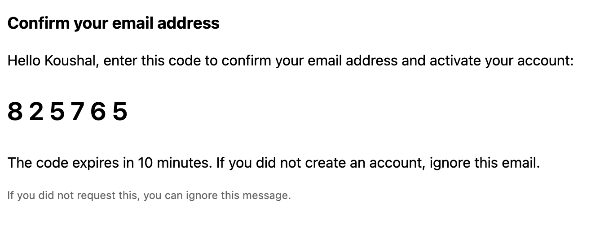
- Type the code into the Confirmation code boxes and click Confirm email. If the email has not arrived, or the code has stopped working, wait for the countdown to finish and click Send a new code.
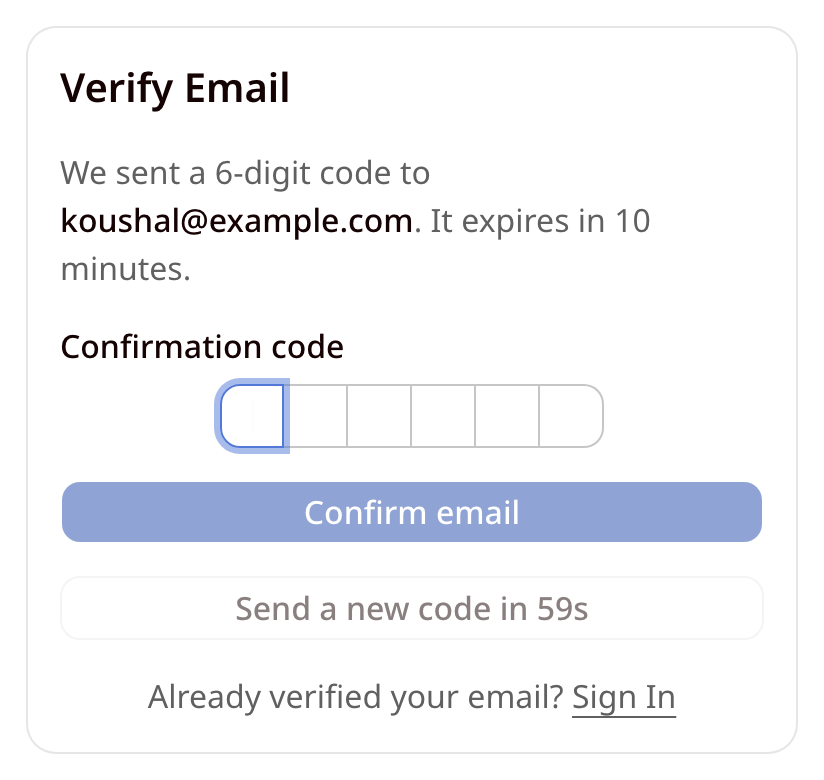
- Once the address is confirmed, WVS returns you to the sign-in page and shows the message below. Confirming the code does not sign you in, so sign in with your email and password to continue.
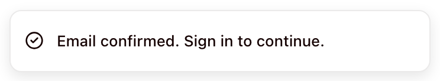
Signing in
- Enter your Email and Password and click Sign In.
- If your email address is not confirmed yet, WVS sends a new confirmation code and opens the Verify Email page instead.
- If two-factor authentication is turned on for your account, WVS then asks for a code from your authenticator app (see Security and two-factor sign-in).
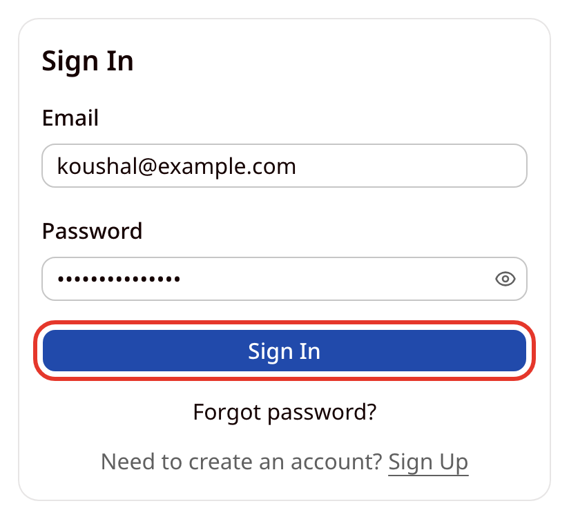
Resetting a forgotten password
- On the sign-in page, click Forgot password? and enter your email address.
- WVS emails you a reset link. The link works for 30 minutes.
- Open the link and choose a new password of at least 12 characters.
- Resetting the password signs you out on every other device.
Actions available to the user
Users have access to the following actions within WVS. They are illustrated in the sections that follow.
- Register a website (a target) and prove ownership of it with a DNS TXT record or a well-known file.
- Limit what is scanned with included and excluded path prefixes.
- Start a scan with a Passive, Standard or Thorough profile, and pause, resume or cancel it while it runs.
- View the history of scans, filtered by:
- Target
- Status (the menu lists status codes, such as
COMPLETEDorABORTED_SAFETY)
- Review findings by applying different filters:
- Severity:
- Critical
- High
- Medium
- Low
- Info
- Triage state:
- Needs action (the default): Open and Confirmed findings only
- All triage states
- A single state: Open, Confirmed, False positive, Accepted risk or Resolved (claimed)
- Diff status:
- New
- Persisting
- Confidence, OWASP category and target
- Free-text search by finding name or URL, or by detector ID
- Severity:
- Triage findings, one at a time or many at once.
- Generate reports as an Executive Summary or a Technical Report, in PDF, HTML, JSON, CSV or SARIF, and download them.
- Share a report through a time-limited link, and revoke the link.
- Manage the account: name, avatar, password, active sessions, two-factor authentication, and deleting the account.
What each role can do
Every account has one role, which decides which of the actions above are available. A new account starts as an Analyst, and each new account gets its own organisation. Only an administrator can change a role.
| Role | What the role can do |
|---|---|
| Analyst, Developer | Every action in this manual except the Admin area. |
| Viewer | Read-only. Can view targets, scans and findings, and request reports. Can download a report only if it contains no raw evidence. Cannot register targets, start scans, triage findings or create share links. Raw evidence is never shown to a viewer. |
| Administrator | Everything an analyst can do in their own organisation, plus the Admin area described in Administrator features. |
WVS overview
After signing in, WVS opens the Targets page. The bar at the top of every page holds the main menu on the left and your account menu on the right.
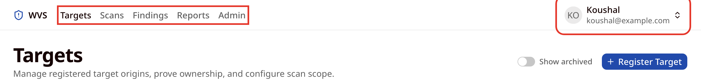
- Targets: the websites you have registered, and where you prove ownership and start scans.
- Scans: every scan your organisation has run.
- Findings: what the latest scan of each target found.
- Reports: generated reports, ready to download or share.
- Admin: shown to administrators only.
Click your name in the top right corner to open the account menu, which holds Settings and Sign Out.
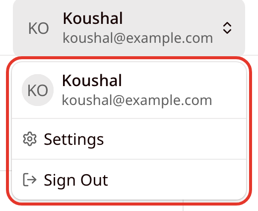
WVS features
1. Registering a target
- A target is one website origin, such as
https://shop.example.com. Open Targets and click Register Target. Registered targets are listed with their verification status, the date verification expires, and whether they can be scanned. Click Details to open a target.
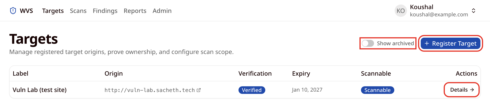
- Fill in the Register Target form:
- Target Label: a friendly name, for example "Production Application".
- Origin URL: the scheme and host only (
http://orhttps://). Paths, query strings and IP addresses are not accepted. - Verification Method: how you will prove ownership. DNS TXT Record is recommended and works with every hosting provider. Well-Known File suits sites where you can upload a file. The example in this manual uses Well-Known File.
- Authorisation Acknowledgement: tick the box to confirm that you own the target or have written permission from its owner to scan it. This statement is recorded once, at registration, and cannot be edited later.
- Click Register & Continue.
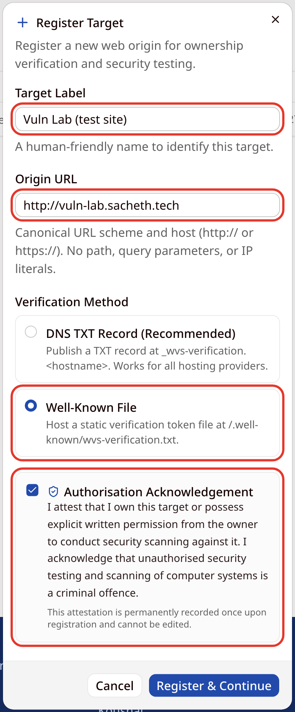
2. Proving ownership
- After registering, WVS opens the Ownership Verification page. The target shows Pending and Not Scannable until ownership is proved.
- Publish the token shown on the page:
- Well-Known File: create a file at
/.well-known/wvs-verification.txton your website that contains exactly the token, served as plain text. The URL must not redirect to a private or internal address. Click Open to check the file is reachable. - DNS TXT Record: with your DNS provider, create a TXT record at
_wvs-verification.<your hostname>whose value is the token. For this method the page shows the record name and value instead of a file URL.
- Well-Known File: create a file at
- Use the copy buttons next to each value to avoid typing mistakes, then click Verify ownership. The screenshots below show the Well-Known File method.
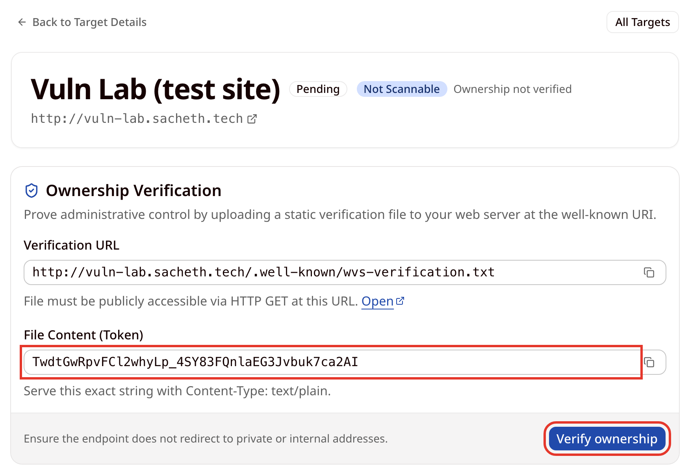
- When the token is found, the target is marked Verified and Scannable. WVS records the IP addresses the website resolved to at that moment and only ever sends scan traffic to those addresses.
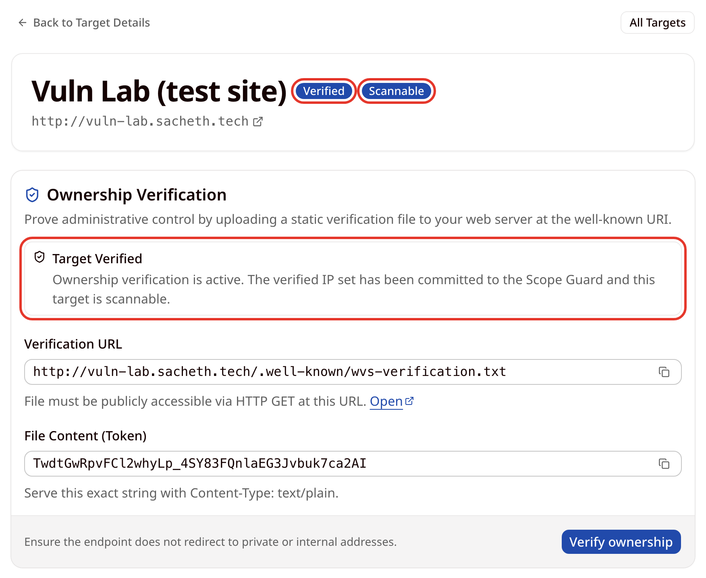
3. Target details and scope
- The target details page shows everything WVS knows about the target:
- Start Scan and Verification Instructions buttons.
- Verification Lifecycle: the method, status, when it was verified and when it expires.
- Authorisation Acknowledgement: whether the acknowledgement was recorded, and when.
- Verified IP Set: the addresses scan traffic is pinned to.
- Archive Target takes effect immediately, without a confirmation step, and cannot be undone. An archived target can no longer be scanned or verified. It stays listed on the Targets page when Show archived is switched on.
- Delete Target asks for confirmation, then permanently removes the target together with all of its scans and findings.
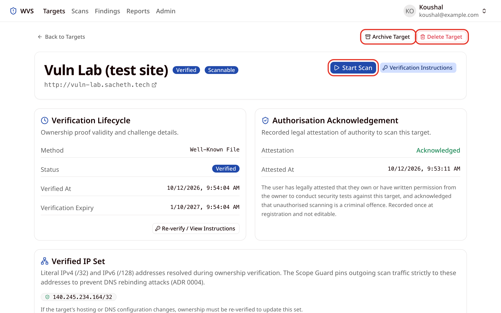
- Use Scope Configuration, further down the same page, to control which parts of the site are scanned:
- Included Path Prefixes: when any are set, only URLs that start with one of them are crawled and scanned. Leave the list empty to scan the whole origin.
- Excluded Path Prefixes: URLs that start with one of these are never requested, for example
/logoutor/admin.
- Type a prefix, click Add, and click Save Scope. The footer shows Unsaved changes until you save.
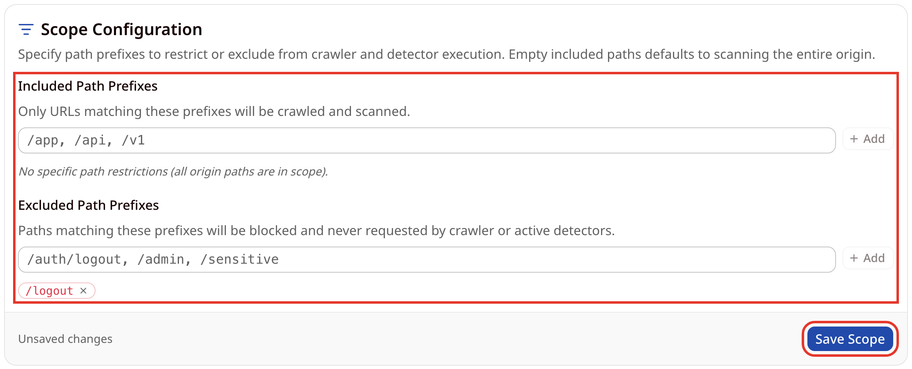
4. Starting a scan
- Click Start Scan on the target details page and choose a profile:
| Profile | Best for | Rate | Depth | Pages | Requests |
|---|---|---|---|---|---|
| Passive | Production sites, minimum load | 5 req/s | 3 | 100 | 1,000 |
| Standard (default) | A balance of coverage and time | 10 req/s | 5 | 200 | 2,000 |
| Thorough | Staging or low-traffic sites | 10 req/s | 10 | 1,000 | 10,000 |
- Tick Customise limits to lower any of Requests / second, Concurrency, Crawl depth, Page ceiling and Request ceiling for a fragile site. Fields left blank keep the profile value. Limits can never go above system policy: rate 1 to 10 requests per second, depth 1 to 10, pages 1 to 1,000 and requests 1 to 10,000. A scan also never goes faster than your organisation's request-rate quota, which an administrator may set below 10.
- The Will run with line confirms the final limits. Click Start Scan.
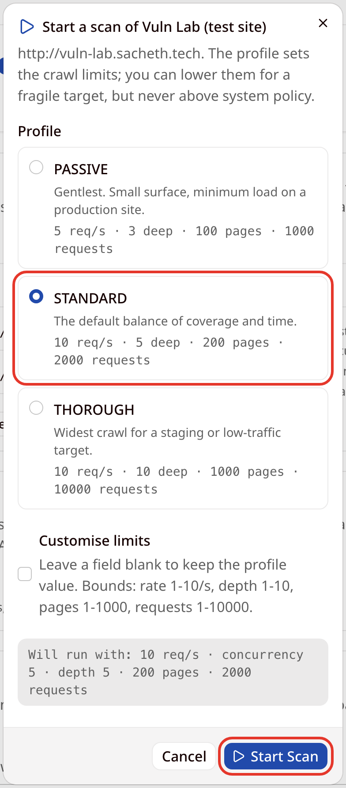
5. Following a scan
- WVS opens the scan page as soon as the scan is queued. While the scan runs, the page updates live (every 2 seconds or faster): the Phase, Pages crawled, Requests made and Findings, and the findings discovered so far.
- Click Pause to stop the scan temporarily and Resume to continue it from where it stopped. A paused scan still holds one of your organisation's concurrent-scan slots. Click Cancel to end the scan.
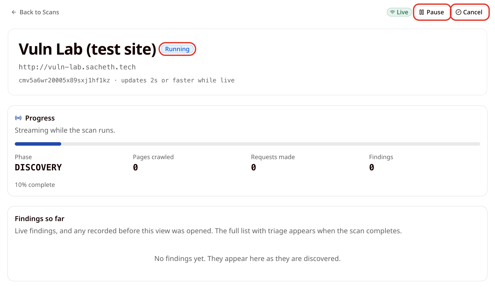
A scan is always in one of these states:
| Status | Meaning |
|---|---|
| Queued | Waiting for a scan worker to pick it up. |
| Running | Crawling the site and running detectors. |
| Paused | Stopped temporarily. Resume continues it. |
| Completed | Finished. Its findings are available. |
| Cancelled | Ended by a user before it finished. |
| Failed | Stopped by an error. The page shows a Scan failed message with the reason. |
| Aborted (safety) | Stopped by a safety control, such as the administrator kill switch. It cannot be resumed. |
The scan page can also show these messages:
- Reduced coverage: lists reasons the scan could not see everything, for example the target blocking the scanner.
- No update from the scan engine: the scan has reported no progress for over five minutes. Click Refresh to check again.
- When the scan finishes, its status changes to Completed and the Findings section lists everything it found, compared with the previous scan of the same target. The section has the same filters as the Findings page.
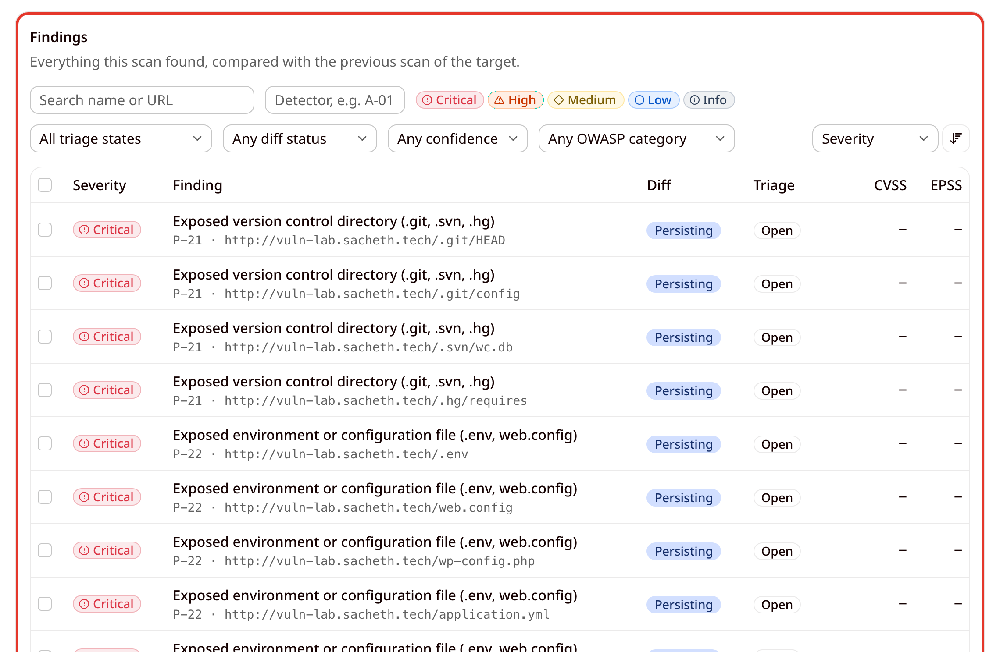
- Further down, Resolved since previous scan lists findings that the previous scan found and this scan no longer sees. In this example,
/backupwas excluded from scope before the rescan, so the backup findings appear here. This is what the scanner observed, and it is separate from the triage state Resolved (claimed), which is a person's claim.
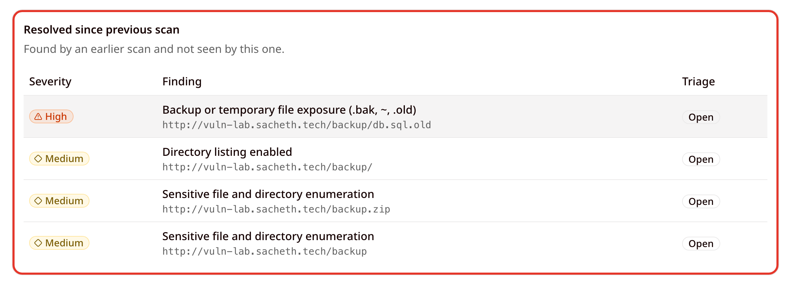
- At the bottom of the page, the Reports section generates reports for this scan, and How this scan was produced records the profile, who started the scan, the limits, the scope snapshot, the detector versions and the times it was queued, started and finished.
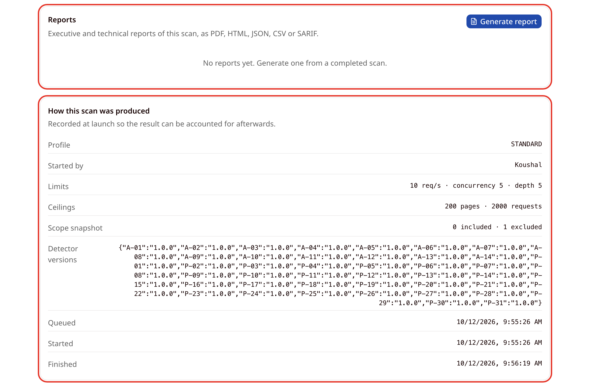
6. Viewing scan history
- The Scans page lists every scan your organisation has run, newest first, with its profile, status, start time and number of findings.
- Use the All targets and All statuses menus to narrow the list. The status menu lists status codes, for example
ABORTED_SAFETYfor Aborted (safety). Click a scan to open it.
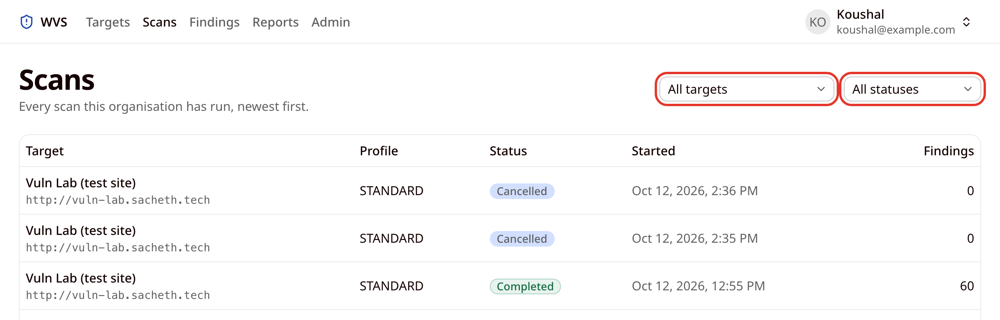
7. Reviewing findings
- The Findings page shows what the latest completed scan of each target found, most urgent first. Each row shows the severity, the finding name, the detector ID and affected URL, the target, the diff and triage status, and the CVSS and EPSS scores where known.
- Use the filter bar to narrow the list:
- Search name or URL and Detector (for example
A-01). - The severity chips: Critical, High, Medium, Low and Info.
- The triage menu. It defaults to Needs action, which shows only Open and Confirmed findings, so findings marked False positive, Accepted risk or Resolved (claimed) are hidden. Choose All triage states to see every finding.
- The diff status, confidence, OWASP category and target menus, and the sort order on the right.
- Search name or URL and Detector (for example
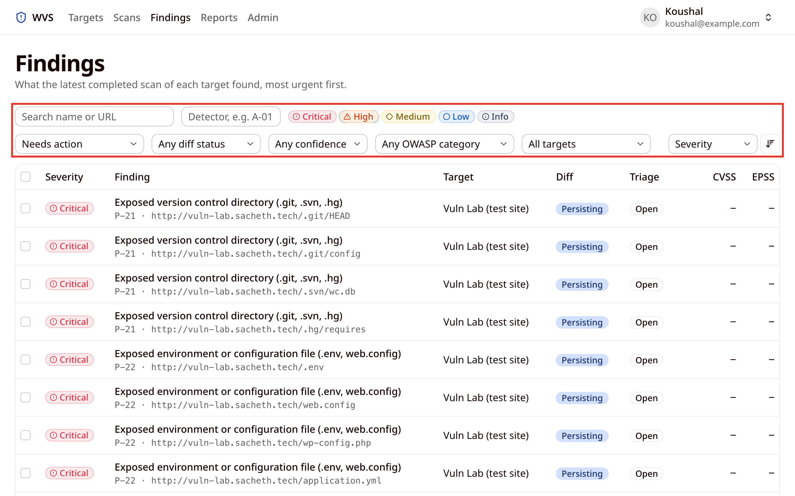
- For example, after typing "injection" in the search box:
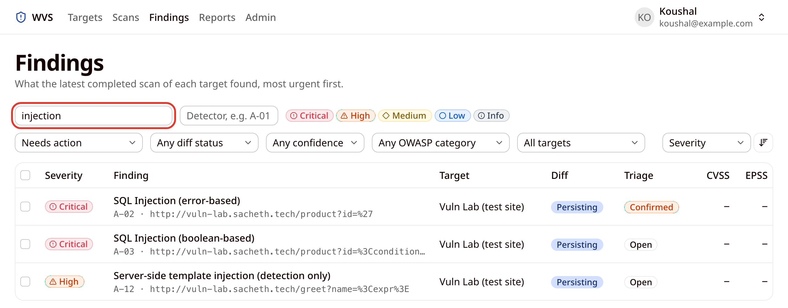
The Diff column compares each finding with the previous scan of its target:
| Diff status | Meaning |
|---|---|
| New | First seen in this scan. |
| Persisting | Also found by the previous scan. |
Findings that a rescan no longer sees do not appear on this page. They are listed under Resolved since previous scan on that scan's page (see Following a scan).
8. Finding details
- Click a finding to open its details. The top of the page shows its severity, triage and diff status, a description of the problem, and the affected URL and parameter.
- How to fix it explains the remediation.
- Technical detail lists the detector, confidence, CWE, OWASP category, CVSS, CVE and EPSS, how many times it occurs, and when it was first and last seen.
- Evidence shows the request and response that substantiate the finding. Evidence is withheld when WVS has not confirmed that credentials and personal data were redacted from it, and it is never shown to viewers.
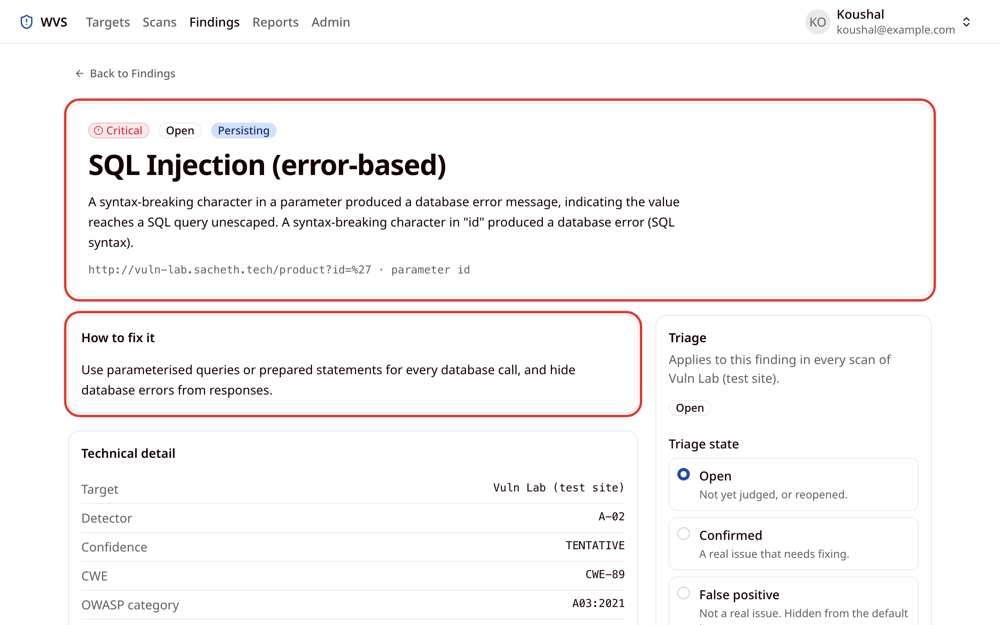
9. Triaging findings
- Triage records your judgement about a finding. Choose a Triage state on the right of the finding details page, add a justification, and click Record triage.
| Triage state | Meaning |
|---|---|
| Open | Not yet judged, or reopened. |
| Confirmed | A real issue that needs fixing. |
| False positive | Not a real issue. Hidden from the default list. Needs a justification. |
| Accepted risk | Real, but accepted. Hidden from the default list. Needs a justification. |
| Resolved (claimed) | You believe it is fixed. Hidden from the default list. The next scan shows whether it is really gone. |
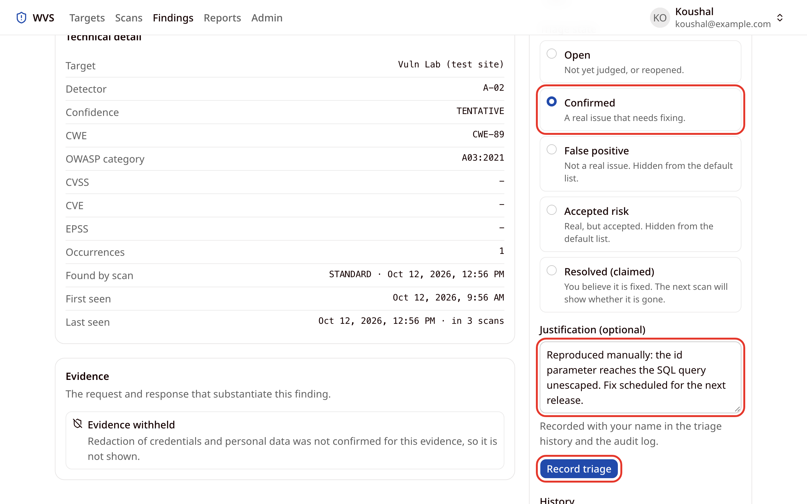
- Triage applies to the finding in every scan of that target, so it carries forward to future scans. Each change is recorded with your name in the History and in the audit log.
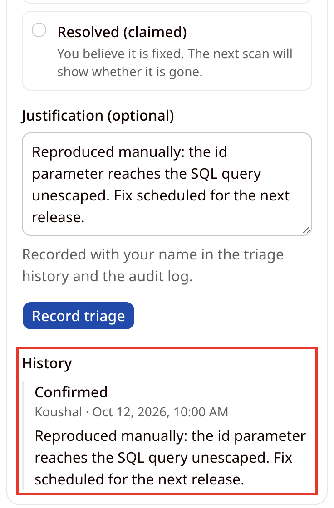
Triaging several findings at once
- On the Findings page, tick the checkboxes beside the findings. A bar shows how many are selected. Click Set triage….
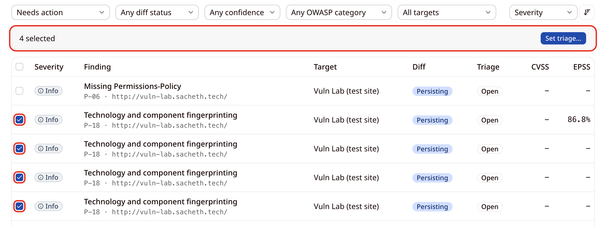
- Choose the state, enter a justification, and click Record triage. The findings update together, and those marked False positive or Accepted risk drop out of the default list.
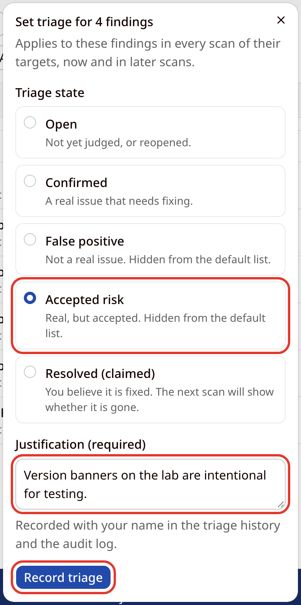
10. Generating reports
- Click Generate report on the Reports page or in the Reports section of a completed scan, and choose:
- Scan: any completed scan.
- Template: Executive Summary (posture, severity distribution and trend for a non-technical reader, never including raw evidence) or Technical Report (every finding with its description and remediation, plus evidence where available, for the people fixing them).
- Format: PDF for reading and sending, HTML as a self-contained page, JSON for scripts, CSV for spreadsheets, or SARIF 2.1.0 for GitHub code scanning.
- Severity threshold and Triage states to include. Leave every triage box unticked to include all states.
- Click Generate.
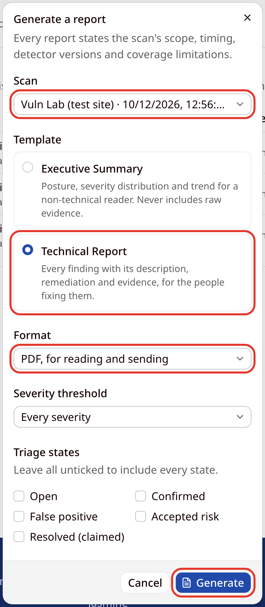
- Reports are generated in the background, and WVS emails you when yours is ready. Click Download to save a ready report. A report's status is one of:
- Queued or Generating: still being produced.
- Ready: available to download and share.
- Failed: could not be produced. The row shows the reason.
- Expired: the evidence in the report has passed its retention period, so it can no longer be downloaded.
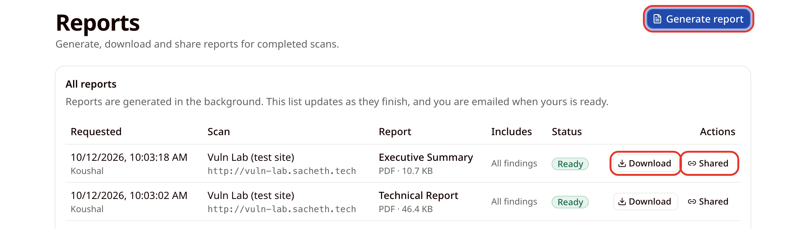
- Every report carries a Coverage limitations section that says what the scan could not see. The first page of an Executive Summary:
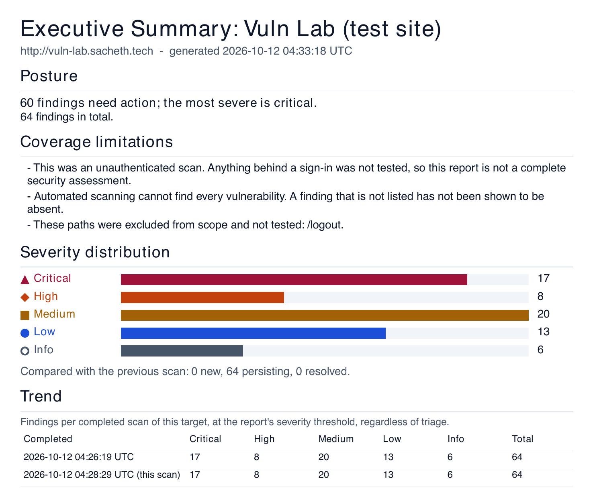
- A finding as it appears in the Technical Report. Evidence is included only when its redaction has been confirmed; otherwise the report says it is withheld, as in this example.
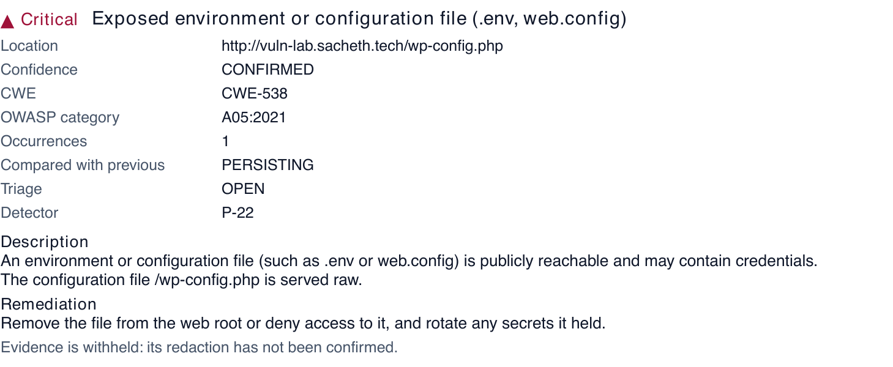
11. Sharing a report
- Click Share next to a ready report. The button reads Shared while the report has a working link. Under Expires after, choose how long the link should work (1, 7, 14 or 30 days; 7 days by default), then click Create link. If the report contains evidence, the dialog also shows when that evidence expires, because a link cannot outlast it.
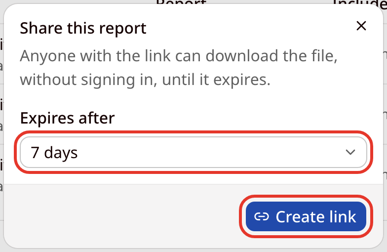
- Copy the link straight away: it is shown only once. Anyone with the link can download the report without signing in, until it expires. Creating a new link stops the old one working, and Revoke link stops it immediately. Viewers cannot create share links.
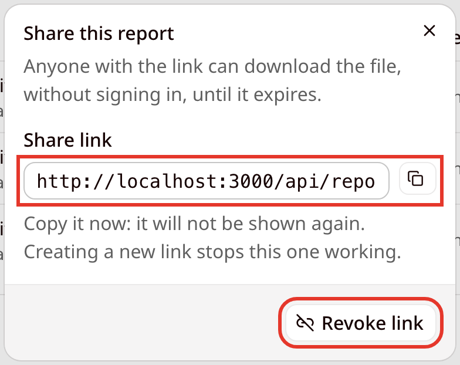
12. Account settings
- Open Settings from the account menu. On the Account tab you can change your avatar and name and delete your account. The Change email card is shown, but changing the email address is not available in this version.
- To delete your account, click Delete account, enter your password and confirm. WVS then emails you a confirmation link that works for 24 hours, and the account is deleted only when you open it. Deleting removes your account and everything belonging to your organisation, permanently.
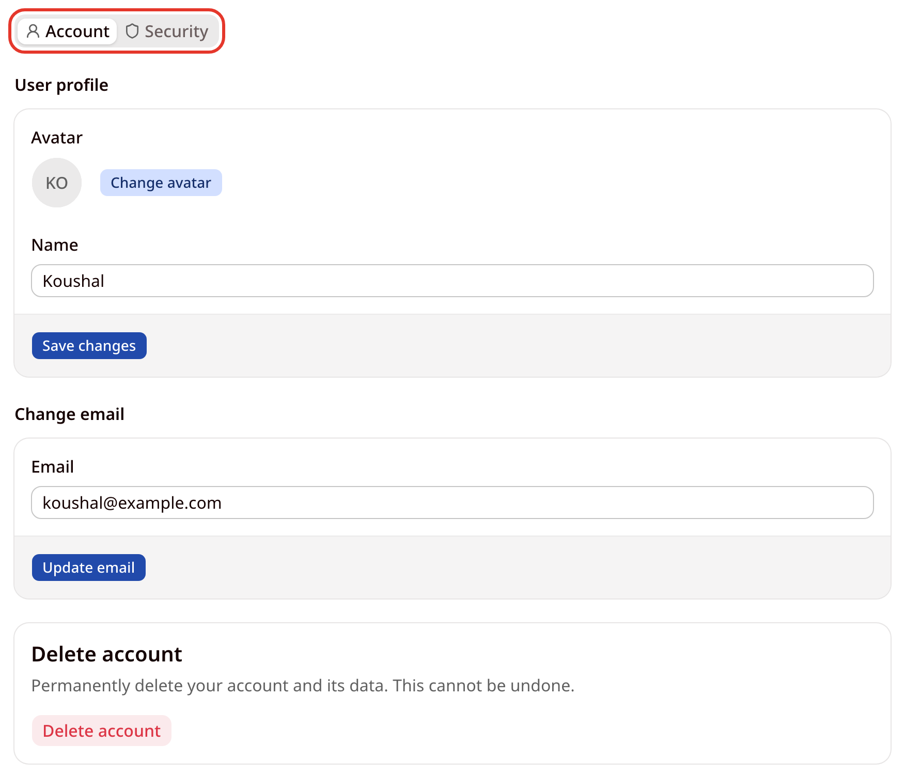
13. Security and two-factor sign-in
- The Security tab holds:
- Change password: enter your Current password and a New password, then click Update password.
- Active sessions: every device signed in to your account. The current session has a Sign Out button and other sessions have Revoke. Sign out other devices ends every session except this one, and Sign out everywhere ends all of them, including this one.
- Two-Factor Authentication: an extra sign-in step, so a stolen password is not enough on its own.
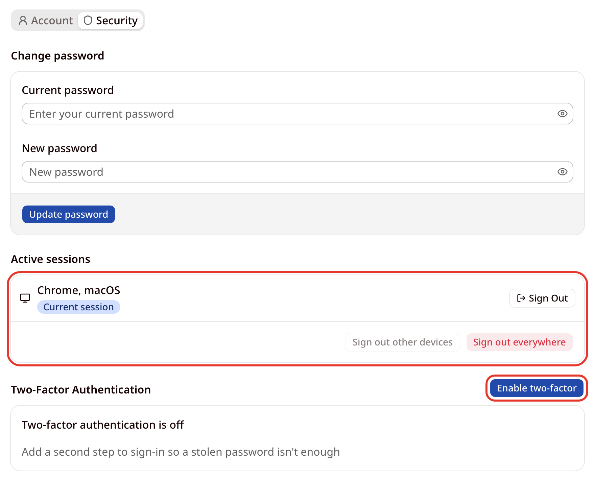
Turning on two-factor authentication
- Click Enable two-factor and enter your password.
- Scan the QR code with an authenticator app such as Google Authenticator or Microsoft Authenticator. If you cannot scan it, type the setup key into the app instead. (The QR code and key are blurred in this manual.)
- Enter the 6-digit code the app shows and click Verify.
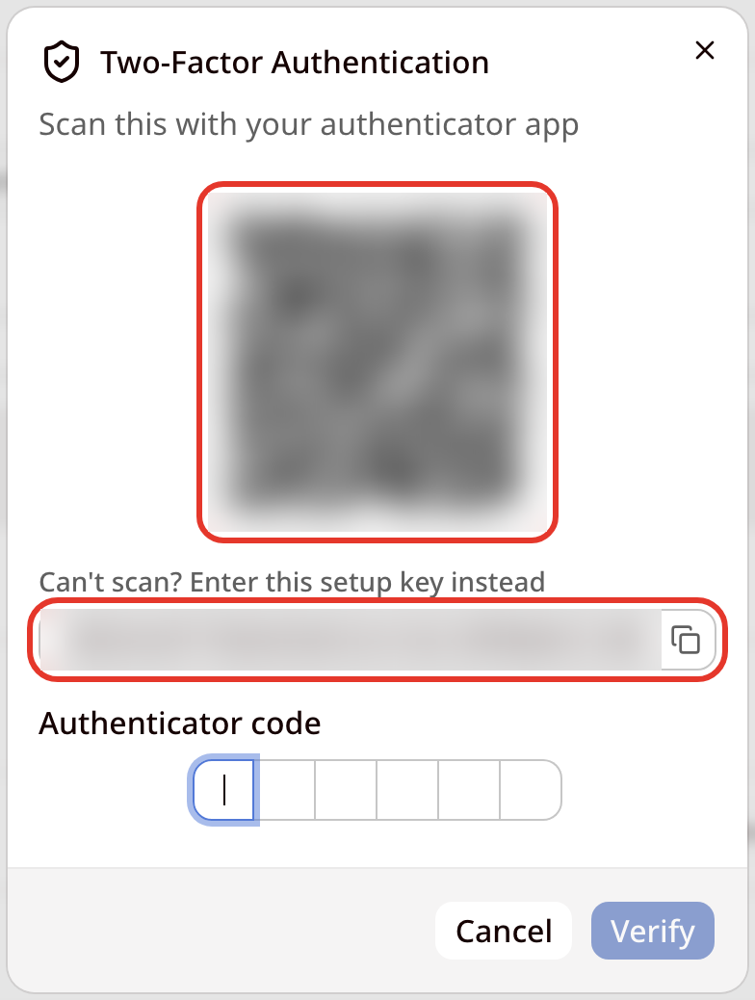
- WVS shows ten backup codes. Save them somewhere safe with Copy to clipboard, Download .txt or Print. Each code works once, for when you do not have your authenticator. Click Done.
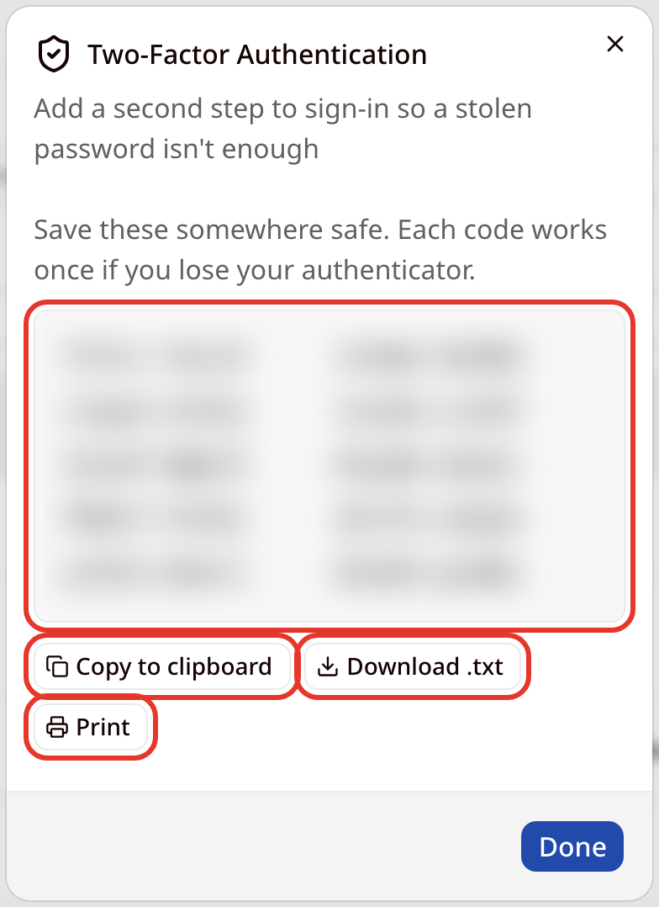
- The Security tab now shows that two-factor authentication is on. From here you can Regenerate backup codes or Disable two-factor.
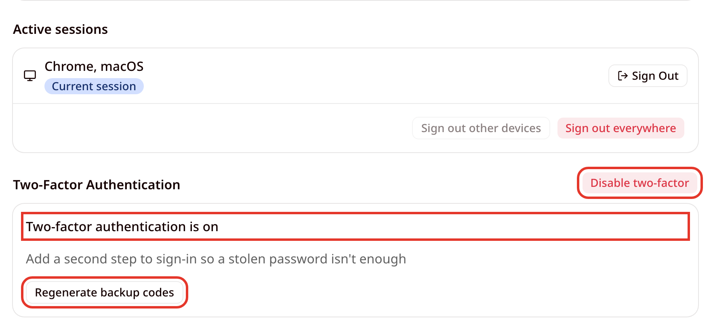
Signing in with two-factor authentication
- After your password, enter the code from your authenticator app. Tick Trust this device to be asked for the code less often on this device, or click Use a backup code if you do not have the app.
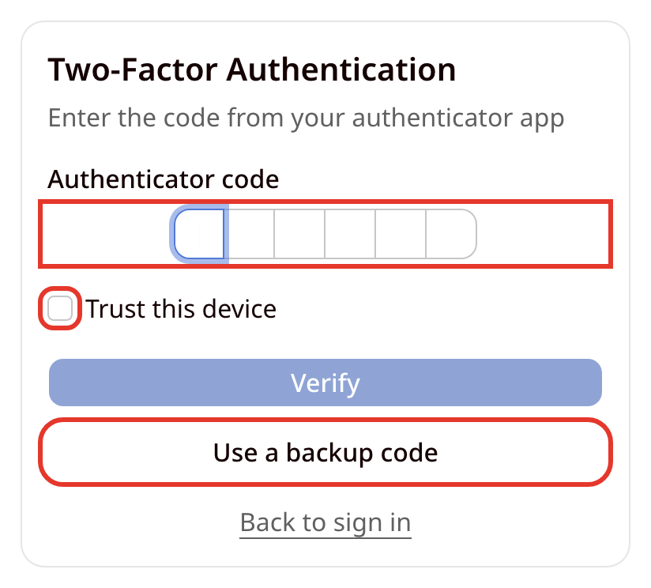
Administrator features
Administrators operate the whole WVS deployment. They manage accounts, quotas, the network blocklist and the kill switch across every organisation, but they cannot see another organisation's targets, scans or findings. An administrator must turn on two-factor authentication before using the Admin area.
Accessing the Admin area
- Click Admin in the top bar.
- Choose a tab: System, Accounts, Organisations, Blocklist or Audit log.
1. System status and health
- The System tab shows whether scanning is running normally and the System health checks: Database, Redis, Scan queue, Active scans and Email retry queue. The checks refresh every 15 seconds, and each one reports on its own.
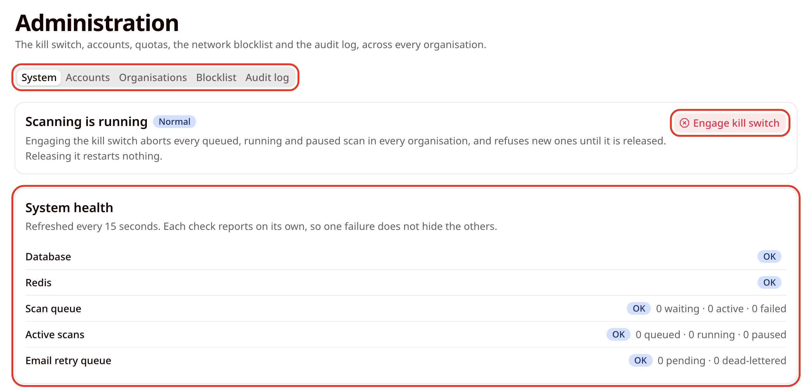
2. The kill switch
- The kill switch halts all scanning at once. Engaging it aborts every queued, running and paused scan in every organisation and refuses new ones until it is released.
- Click Engage kill switch, give a reason (it is kept in the audit log), type HALT to confirm, and click Halt all scans.
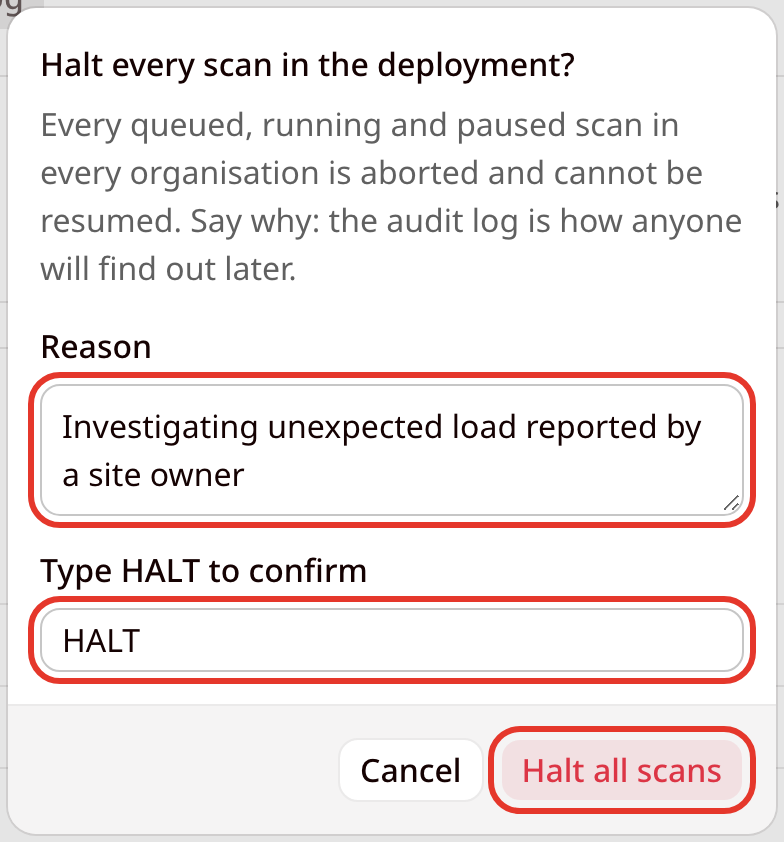
- While the kill switch is engaged, every user sees a red banner and no scan can start, resume or send a request. Click Release kill switch and give a reason to allow scanning again. Releasing it restarts nothing: aborted scans stay aborted.
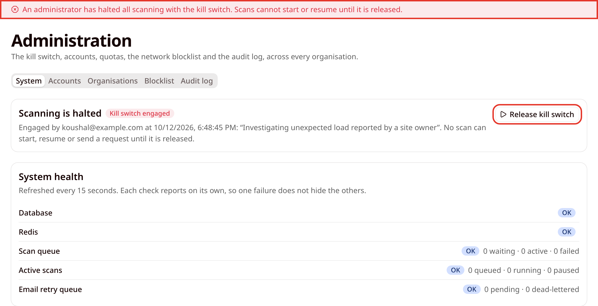
3. Accounts
- The Accounts tab lists every account with its organisation, role, two-factor status and last sign-in. Search by email or name.
- Change an account's role with the role menu:
ADMIN,ANALYST,DEVELOPERorVIEWER. - Click Suspend and confirm to block an account from signing in. The suspension lasts until an administrator clicks Lift suspension.
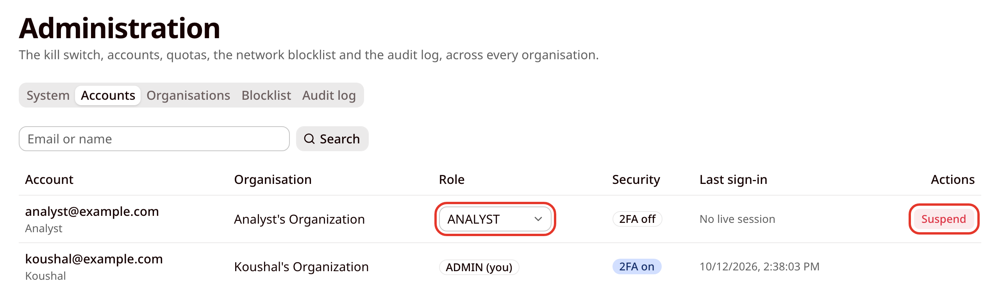
4. Organisations and quotas
- The Organisations tab lists each organisation with its members, active and allowed scans, and request rate cap. Click Edit to change its quota:
- Concurrent scans: between 0 and 20. Zero suspends scanning for the organisation.
- Request rate: at most 10 requests per second, the safety limit that applies to every scan.
- A new quota applies to scans started from then on. Scans already running are not stopped.
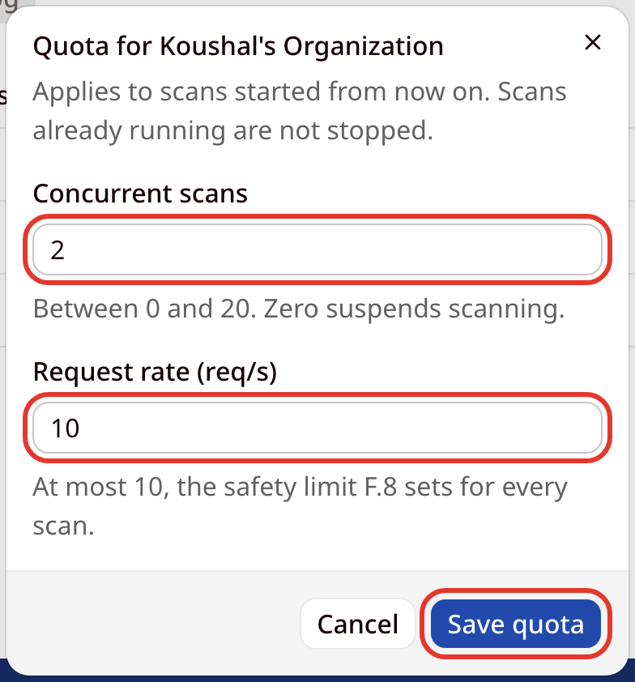
5. Network blocklist
- The Blocklist tab holds hosts and address ranges that no target may resolve to and no scan may reach. Choose a Type (host and subdomains, CIDR network or address range), enter the Pattern, explain the entry under Why is it blocked?, and click Add to blocklist.
- Switch an entry off with its Active toggle, or remove it with the delete button. Targets already verified against a blocked host stay registered but can no longer be scanned.
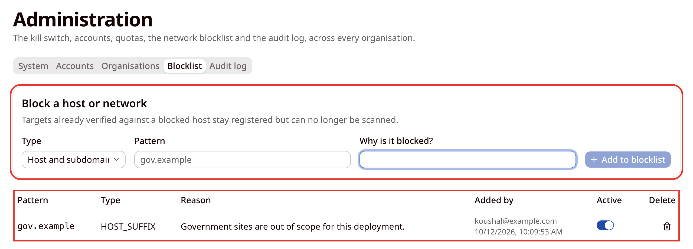
6. Audit log
- The Audit log is a permanent, append-only record of actions: target changes, scans, triage decisions, report exports and shares, and every administrator action. Times are shown in UTC.
- Filter by Action or by Resource id and click Apply.
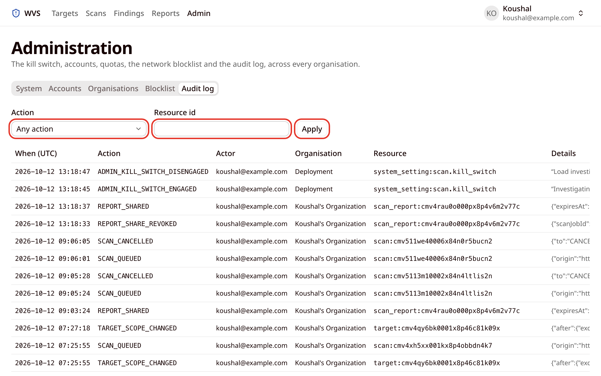
Glossary
| Term | Meaning |
|---|---|
| Target | One website origin registered in WVS, such as https://shop.example.com. |
| Ownership verification | Proving you control a target by publishing a token as a DNS TXT record or a well-known file. |
| Verified IP set | The addresses a target resolved to when it was verified. Scan traffic is only sent to these. |
| Path prefix | The start of a URL path. /backup matches /backup/, /backup/db.sql and /backup.zip. |
| Scan profile | A preset of scan limits: Passive, Standard or Thorough. |
| Detector | One automated check, with an ID such as P-21 or A-02. Passive (P) detectors only read normal responses; active (A) detectors send harmless test inputs. |
| Finding | A possible vulnerability reported by a detector. |
| Severity | How serious a finding is: Critical, High, Medium, Low or Info. |
| Confidence | How sure the detector is: CONFIRMED, FIRM or TENTATIVE. |
| Posture | The findings of a target's most recent completed scan. |
| Triage | A person's judgement about a finding, such as Confirmed or False positive. |
| Diff status | How a finding compares with the previous scan: New or Persisting. |
| CVSS | Common Vulnerability Scoring System: a 0 to 10 score of how severe a known vulnerability is. |
| EPSS | Exploit Prediction Scoring System: the estimated chance that a known vulnerability will be exploited in the next 30 days. |
| CWE | Common Weakness Enumeration: a standard ID for a type of weakness, such as CWE-89 for SQL injection. |
| OWASP category | The OWASP Top 10 (2021) category a finding belongs to, such as A03:2021 (Injection). |
| SARIF | Static Analysis Results Interchange Format: a JSON format that tools such as GitHub code scanning can import. |
| Kill switch | An administrator control that halts all scanning in the deployment. |
- WVS scans without signing in to the target. Pages behind a login are not tested, so a report with few findings is not a complete security assessment.
- WVS never exploits a finding, never guesses passwords and never load-tests a site. Scans are limited to 10 requests per second, and every request identifies itself as coming from WVS.
- Ownership verification expires after 90 days. Re-verify before then to keep scanning the target.
- Finding evidence is deleted when the retention period ends (90 days by default).
- Treat report share links as secrets: anyone who has one can download the report until it expires or is revoked.